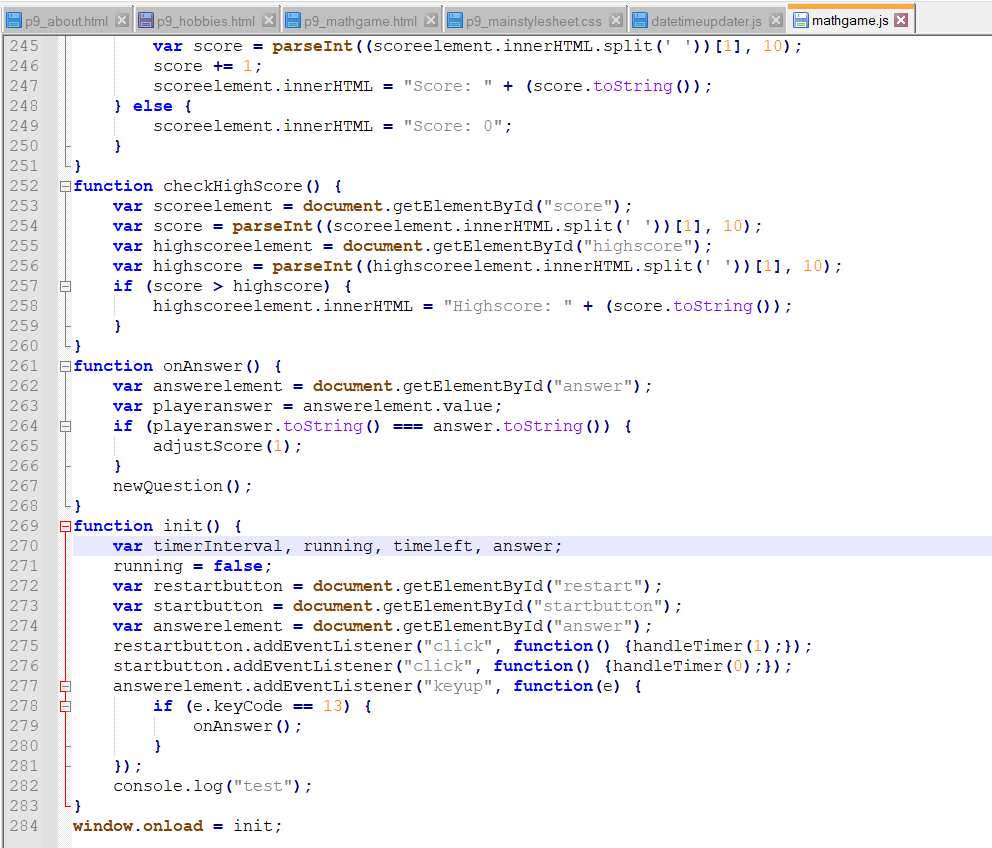

|
My Hobbies:
I have both constructive hobbies and relaxing ones. Math and programming are things that I (somewhat surpringly) do in my freetime to some extent, such as by watching videos to learn new concepts or programming things for projects. I also do these things academically for competitions and learn and practise for them.
For relaxing, I generally just go on the Internet, most of the time is spent on YouTube, but sometimes I spend my time just going though Wikipedia or other websites researching or looking into random things that intrigue me.
|

|